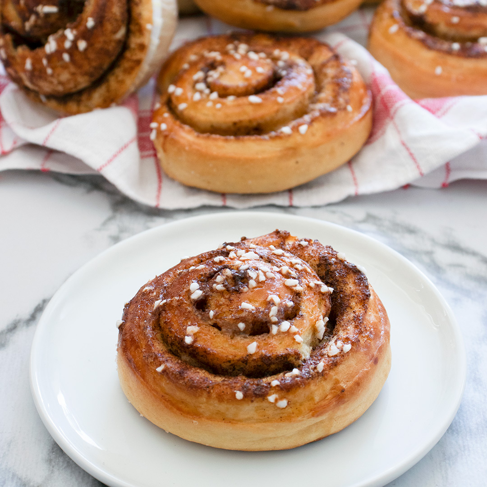

Recept på kanelbullar
Klassiska och saftiga kanelbullar som doftar helt underbart! Perfekta till fikat, kalaset eller när du vill unna dig något riktigt gott. Servera gärna med ett kallt glas mjölk eller en kopp kaffe.

Här är listan av ingredienser
- 50 g jäst
- 5 dl ljummen mjölk
- 150 g rumsvarmt smör
- 1 dl socker
- 1/2 tsk salt
- 2 tsk stött kardemumma
- ca 13 dl vetemjöl
- Fyllning: 100 g rumsvarmt smör, 1 dl socker, 2 msk kanel
- Garnering: 1 ägg och pärlsocker
Gör så här
- Smula jästen i en bunke. Häll över den ljumma mjölken (37°C) och rör tills jästen löst sig.
- Tillsätt rumsvarmt smör, socker, salt, kardemumma och det mesta av vetemjölet. Arbeta degen smidig tills den släpper från bunkens kanter. Låt jäsa under bakduk i ca 30 minuter.
- Blanda smör, socker och kanel till fyllningen.
- Kavla ut degen till en stor rektangel på ett mjölat bakbord. Bred på fyllningen och rulla ihop från långsidan. Skär i skivor och lägg i pappersformar på en plåt.
- Låt jäsa under bakduk i ca 30-40 minuter. Sätt ugnen på 225°C.
- Pensla bullarna med uppvispat ägg och strö över pärlsocker. Grädda mitt i ugnen i ca 8-10 minuter tills de fått fin färg.